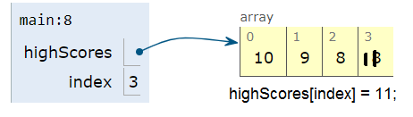
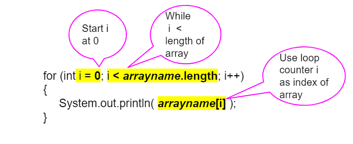
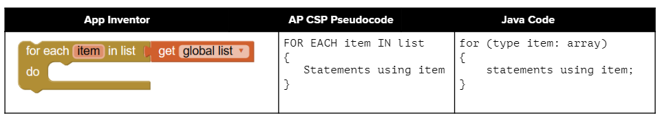

Note 4.4.3.
Using a variable as the index is a powerful data abstraction feature because it allows us to use loops with arrays where the loop counter variable is the index of the array! This allows our code to generalize to work for the whole array.

// highScores array declaration
int[] highScores = { 10, 9, 8, 8};
// use a variable for the index
int index = 3;
// modify array value at index
highScores[index] = 11;
// print array value at index
System.out.println( highScores[index] );
System.out.println( highScores[index - 1] );

for loop or while loop, accessing the elements using an index variable.Just start the index at 0 and loop while the index is less than the length of the array. Note that the variable i (short for index) is often used in loops as the loop counter variable and is used here to access each element of an array with its index. Since this is a simple counter-controlled loop, for loops are used more often than while loops for array traversals.

for loop and a while loop that traverse the highScores array to print every score. Try the code for the for loop below in the visualizer.
int[] highScores = { 10, 9, 8, 11};
for (int i = 0; i < highScores.length; i++)
{
System.out.println( highScores[i] );
}
// Or with a while loop
int i = 0;
while (i < highScores.length)
{
System.out.println( highScores[i] );
i++;
}
public class Test2
{
public static void main(String[] args)
{
String[] names = {"Jamal", "Emily", "Destiny", "Mateo", "Sofia"};
for (int i = 0; i < names.length; i++)
{
System.out.println(names[i]);
}
}
}
public class ArrayLoop
{
// What does this method do?
public static void multAll(int[] values, int amt)
{
for (int i = 0; i < values.length; i++)
{
values[i] = values[i] * amt;
}
}
// What does this method do?
public static void printValues(int[] values)
{
for (int i = 0; i < values.length; i++)
{
System.out.println(values[i]);
}
}
public static void main(String[] args)
{
int[] numArray = {2, 6, 7, 12, 5};
multAll(numArray, 2);
printValues(numArray);
}
}
&&) on line 14 to make sure that the loop doesn’t go beyond the length of the array, because if you had an array that had less than 5 elements, you wouldn’t want the code to try to double the 5th element which doesn’t exist! Notice that in this code, the array is a private instance variable of the class ArrayWorker. It is created in the constructor and changed or accessed by the methods.
public class ArrayWorker
{
private int[] values;
public ArrayWorker(int[] theValues)
{
values = theValues;
}
/** Doubles the first 5 elements of the array */
public void doubleFirstFive()
{
// Notice: && i < 5
for (int i = 0; i < values.length && i < 5; i++)
{
values[i] = values[i] * 2;
}
}
/**
* Write a method called tripleFirstFour() that triples
* the first 4 elements of the array *
*/
public void tripleFirstFour()
{
}
/** Prints the array */
public void printArray()
{
for (int i = 0; i < values.length; i++)
{
System.out.println(values[i]);
}
}
public static void main(String[] args)
{
int[] numArray = {3, 8, -3, 2, 20, 5, 33, 1};
ArrayWorker worker = new ArrayWorker(numArray);
worker.doubleFirstFive();
worker.printArray();
// uncomment these to test
// worker.tripleFirstFour();
// worker.printArray();
}
}
private int[ ] a = {-20, -15, 2, 8, 16, 33};
public void doubleLast()
{
for (int i = a.length / 2; i < a.length; i++)
{
a[i] = a[i] * 2;
}
}
private int[ ] a = {-20, -15, 2, 8, 16, 33};
public void mystery()
{
for (int i = 0; i < a.length/2; i+=2)
{
a[i] = a[i] * 2;
}
}
0 and end at the last index. Usually loops are written so that the index starts at 0 and continues while the index is less than arrayName.length since (arrayName.length - 1) is the index for the last element in the array. Make sure you do not use <= instead of <! If the index is less than 0 or greater than (arrayName.length - 1), an ArrayIndexOutOfBoundsException will be thrown. Off by one errors, where you go off the array by 1 element, are easy to make when traversing an array which result in an ArrayIndexOutOfBoundsException being thrown.
public class OffByone
{
public static void main(String[] args)
{
int[] scores = {10, 9, 8, 7};
// Make this loop print out all the scores!
for (int i = 1; i <= scores.length; i++)
{
System.out.println(scores[i]);
}
}
}
public class StringWorker
{
private String[] arr = {"Hello", "Hey", "Good morning!"};
public int findString(String target)
{
String word = null;
for (int index = 0; index < arr.length; index++)
{
word = arr[index];
if (word.equals(target))
{
return index;
}
else
{
return -1;
}
}
return -1;
}
public static void main(String[] args)
{
StringWorker sWorker = new StringWorker();
System.out.println(sWorker.findString("Hey"));
}
}
temp is an int variable initialized to be greater than zero and that a is an array of integers.
for ( int k = 0; k < a.length; k++ )
{
while ( a[ k ] < temp )
{
a[ k ] *= 2;
}
}

int[] highScores = { 10, 9, 8, 8};
String[] names = {"Jamal", "Emily", "Destiny", "Mateo"};
// for each loop: for each value in highScores
// for (type variable : arrayname)
for (int value : highScores)
{
// Notice no index or [ ], just the variable value!
System.out.println( value );
}
// for each loop with a String array to print each name
// the type for variable name is String!
for (String name : names)
{
System.out.println(name);
}
public class ForEachDemo
{
public static void main(String[] args)
{
int[] highScores = {10, 9, 8, 8};
String[] names = {"Jamal", "Emily", "Destiny", "Mateo"};
// for each loop with an int array
for (int value : highScores)
{
System.out.println(value);
}
// for each loop with a String array
for (String value : names)
{
System.out.println(value); // this time it's a name!
}
}
}
for loop to traverse elements in an array can be rewritten using an indexed for loop or a while loop and vice versa. They are equivalent in terms of functionality, but the enhanced for loop is more concise and easier to read.
public class EvenLoop
{
public static void main(String[] args)
{
int[] values = {6, 2, 1, 7, 12, 5};
// Rewrite this loop as a for each loop and run
for (int i = 0; i < values.length; i++)
{
if (values[i] % 2 == 0)
{
System.out.println(values[i] + " is even!");
}
}
}
}
for loop variable does not change the value stored in the array. We would need an indexed loop to modify array elements. Try it in the Active Code below or in the Java visualizer by clicking the CodeLens button and step through the code to see why it doesn’t work.
public class IncrementLoop
{
public static void main(String[] args)
{
int[] values = {6, 2, 1, 7, 12, 5};
// Can this loop increment the values?
for (int val : values)
{
val++;
System.out.println("New val: " + val);
}
// Print out array to see if they really changed
System.out.println("Array after the loop: ");
for (int v : values)
{
System.out.print(v + " ");
}
}
}
I: If you wish to access every element of an array.
II: If you wish to modify elements of the array.
III: If you wish to refer to elements through a variable name instead of an array index.
int[ ] numbers = {44, 33, 22, 11};
for (int num : numbers)
{
num *= 2;
}
for (int num : numbers)
{
System.out.print(num + " ");
}
class instead of public class.
public class StudentArray
{
private Student[] array;
private int size = 3;
// Creates an array of the default size
public StudentArray()
{
array = new Student[size];
}
// Creates an array of the given size
public StudentArray(int size)
{
array = new Student[size];
}
// Adds Student s to the array at index i
public void add(int i, Student s)
{
array[i] = s;
}
// prints the array of students
public void print()
{
for (Student s : array)
{
// this will call Student's toString() method
System.out.println(s);
}
}
/* Write a findAndPrint(name) method */
public static void main(String[] args)
{
// Create an object of this class and pass in size 3
StudentArray roster = new StudentArray(3);
// Add new Student objects at indices 0-2
roster.add(0, new Student("Skyler", "skyler@sky.com", 123456));
roster.add(1, new Student("Ayanna", "ayanna@gmail.com", 789012));
roster.add(2, new Student("Dakota", "dak@gmail.com", 112233));
roster.print();
System.out.println("Finding student Ayanna: ");
// uncomment to test
// roster.findAndPrint("Ayanna");
}
}
class Student
{
private String name;
private String email;
private int id;
public Student(String initName, String initEmail, int initId)
{
name = initName;
email = initEmail;
id = initId;
}
public String getName()
{
return name;
}
public String getEmail()
{
return email;
}
public int getId()
{
return id;
}
// toString() method
public String toString()
{
return id + ": " + name + ", " + email;
}
}
for loop variable. The references stored in the array are unchanged, but since loop variable is another reference to the same objects, you can change the attributes of an object in an array using the enhanced for loop using its public mutator methods.

print10 method that prints out the first 10 words of the dictionary array. Do not print out the whole array of 10,000 words!
spellcheck method that takes a word as a parameter and returns true if it is in the dictionary array. It should return false if it is not found (When can you tell that you have not found a word in the dictionary?). Test your code below by changing the word sent to the spellcheck() method in main. This algorithm is called a linear search where we step through the array one element at a time (here the dictionary one word at a time) looking for a certain element.
printStartsWith(String) that prints out the words that start with a String of letters in the dictionary array. Your method should take a parameter for the firstLetters as a String. You could use the Java String startsWith() method here if you’d like to, or use indexOf to see if the firstLetters is at index 0 of the string. This is not autograded.
Data: dictionary.txta aa aaa aaron ab abandoned abc aberdeen abilities ability able aboriginal abortion about above abraham abroad abs absence absent absolute absolutely absorption abstract abstracts abu abuse ac academic academics academy acc accent accept acceptable acceptance accepted accepting accepts access accessed accessibility accessible accessing accessories accessory accident accidents accommodate accommodation accommodations accompanied accompanying accomplish accomplished accordance according accordingly account accountability accounting accounts accreditation accredited accuracy accurate accurately accused acdbentity ace acer achieve achieved achievement achievements achieving acid acids acknowledge acknowledged acm acne acoustic acquire acquired acquisition acquisitions acre acres acrobat across acrylic act acting action actions activated activation active actively activists activities activity actor actors actress acts actual actually acute ad ada adam adams adaptation adapted adapter adapters adaptive adaptor add added addiction adding addition additional additionally additions address addressed addresses addressing adds adelaide adequate adidas adipex adjacent adjust adjustable adjusted adjustment adjustments admin administered administration administrative administrator administrators admission admissions admit admitted adobe adolescent adopt adopted adoption adrian ads adsl adult adults advance advanced advancement advances advantage advantages adventure adventures adverse advert advertise advertisement advertisements advertiser advertisers advertising advice advise advised advisor advisors advisory advocacy advocate adware ae aerial aerospace af affair affairs affect affected affecting affects affiliate affiliated affiliates affiliation afford affordable afghanistan afraid africa african after afternoon afterwards ag again against age aged agencies agency agenda agent agents ages aggregate aggressive aging ago agree agreed agreement agreements agrees agricultural agriculture ah ahead ai aid aids aim aimed aims air aircraft airfare airline airlines airplane airport airports aj ak aka al ala alabama alan alarm alaska albania albany albatross albert alberta album albums albuquerque alcohol alert alerts alex alexander alexandria alfred algebra algeria algorithm algorithms ali alias alice alien align alignment alike alive all allah allan alleged allen allergy alliance allied allocated allocation allow allowance allowed allowing allows alloy almost alone along alot alpha alphabetical alpine already also alt alter altered alternate alternative alternatively alternatives although alto aluminium aluminum alumni always am amanda amateur amazing amazon amazoncom amazoncouk ambassador amber ambien ambient amd amend amended amendment amendments amenities america american americans americas amino among amongst amount amounts amp ampland amplifier amsterdam amy an ana anaheim anal analog analyses analysis analyst analysts analytical analyze analyzed anatomy anchor ancient and andale anderson andorra andrea andreas andrew andrews andy angel angela angeles angels anger angle angola angry animal animals animated animation anime ann anna anne annex annie anniversary annotated annotation announce announced announcement announcements announces annoying annual annually anonymous another answer answered answering answers ant antarctica antenna anthony anthropology anti antibodies antibody anticipated antigua antique antiques antivirus antonio anxiety any anybody anymore anyone anything anytime anyway anywhere aol ap apache apart apartment apartments api apnic apollo app apparatus apparel apparent apparently appeal appeals appear appearance appeared appearing appears appendix apple appliance appliances applicable applicant applicants application applications applied applies apply applying appointed appointment appointments appraisal appreciate appreciated appreciation approach approaches appropriate appropriations approval approve approved approx approximate approximately apps apr april apt aqua aquarium aquatic ar arab arabia arabic arbitrary arbitration arc arcade arch architect architects architectural architecture archive archived archives arctic are area areas arena arg argentina argue argued argument arguments arise arising arizona arkansas arlington arm armed armenia armor arms armstrong army arnold around arrange arranged arrangement arrangements array arrest arrested arrival arrivals arrive arrived arrives arrow art arthritis arthur article articles artificial artist artistic artists arts artwork aruba as asbestos ascii ash ashley asia asian aside asin ask asked asking asks asn asp aspect aspects aspnet ass assault assembled assembly assess assessed assessing assessment assessments asset assets assign assigned assignment assignments assist assistance assistant assisted assists associate associated associates association associations assume assumed assumes assuming assumption assumptions assurance assure assured asthma astrology astronomy asus at ata ate athens athletes athletic athletics ati atlanta atlantic atlas atm atmosphere atmospheric atom atomic attach attached attachment attachments attack attacked attacks attempt attempted attempting attempts attend attendance attended attending attention attitude attitudes attorney attorneys attract attraction attractions attractive attribute attributes au auburn auckland auction auctions aud audi audience audio audit auditor aug august aurora aus austin australia australian austria authentic authentication author authorities authority authorization authorized authors auto automated automatic automatically automation automobile automobiles automotive autos autumn av availability available avatar ave avenue average avg avi aviation avoid avoiding avon aw award awarded awards aware awareness away awesome awful axis aye az azerbaijan b ba babe babes babies baby bachelor back backed background backgrounds backing backup bacon bacteria bacterial bad badge badly bag baghdad bags bahamas bahrain bailey baker baking balance balanced bald bali ball ballet balloon ballot balls baltimore ban banana band bands bandwidth bang bangbus bangkok bangladesh bank banking bankruptcy banks banned banner banners baptist bar barbados barbara barbie barcelona bare barely bargain bargains barn barnes barrel barrier barriers barry bars base baseball based baseline basement basename bases basic basically basics basin basis basket basketball baskets bass bat batch bath bathroom bathrooms baths batman batteries battery battle battlefield bay bb bbc bbs bbw bc bd bdsm be beach beaches beads beam bean beans bear bearing bears beast beastality beastiality beat beatles beats beautiful beautifully beauty beaver became because become becomes becoming bed bedding bedford bedroom bedrooms beds bee beef been beer before began begin beginner beginners beginning begins begun behalf behavior behavioral behaviour behind beijing being beings belarus belfast belgium belief beliefs believe believed believes belize belkin bell belle belly belong belongs below belt belts ben bench benchmark bend beneath beneficial benefit benefits benjamin bennett benz berkeley berlin bermuda bernard berry beside besides best bestiality bestsellers bet beta beth better betting betty between beverage beverages beverly beyond bg bhutan bi bias bible biblical bibliographic bibliography bicycle bid bidder bidding bids big bigger biggest bike bikes bikini bill billing billion bills billy bin binary bind binding bingo bio biodiversity biographies biography biol biological biology bios biotechnology bird birds birmingham birth birthday bishop bit bitch bite bits biz bizarre bizrate bk bl black blackberry blackjack blacks blade blades blah blair blake blame blank blanket blast bleeding blend bless blessed blind blink block blocked blocking blocks blog blogger bloggers blogging blogs blond blonde blood bloody bloom bloomberg blow blowing blowjob blowjobs blue blues bluetooth blvd bm bmw bo board boards boat boating boats bob bobby boc bodies body bold bolivia bolt bomb bon bond bondage bonds bone bones bonus boob boobs book booking bookings bookmark bookmarks books bookstore bool boolean boom boost boot booth boots booty border borders bored boring born borough bosnia boss boston both bother botswana bottle bottles bottom bought boulder boulevard bound boundaries boundary bouquet boutique bow bowl bowling box boxed boxes boxing boy boys bp br bra bracelet bracelets bracket brad bradford bradley brain brake brakes branch branches brand brandon brands bras brass brave brazil brazilian breach bread break breakdown breakfast breaking breaks breast breasts breath breathing breed breeding breeds brian brick bridal bride bridge bridges brief briefing briefly briefs bright brighton brilliant bring bringing brings brisbane bristol britain britannica british britney broad broadband broadcast broadcasting broader broadway brochure brochures broke broken broker brokers bronze brook brooklyn brooks bros brother brothers brought brown browse browser browsers browsing bruce brunei brunette brunswick brush brussels brutal bryan bryant bs bt bubble buck bucks budapest buddy budget budgets buf buffalo buffer bufing bug bugs build builder builders building buildings builds built bukkake bulgaria bulgarian bulk bull bullet bulletin bumper bunch bundle bunny burden bureau buried burke burlington burn burner burning burns burst burton bus buses bush business businesses busty busy but butler butt butter butterfly button buttons butts buy buyer buyers buying buys buzz bw by bye byte bytes c ca cab cabin cabinet cabinets cable cables cache cached cad cadillac cafe cage cake cakes cal calcium calculate calculated calculation calculations calculator calculators calendar calendars calgary calibration calif california call called calling calls calm calvin cam cambodia cambridge camcorder camcorders came camel camera cameras cameron cameroon camp campaign campaigns campbell camping camps campus cams can canada canadian canal canberra cancel cancellation cancelled cancer candidate candidates candle candles candy cannon canon cant canvas canyon cap capabilities capability capable capacity cape capital capitol caps captain capture captured car carb carbon card cardiac cardiff cardiovascular cards care career careers careful carefully carey cargo caribbean caring carl carlo carlos carmen carnival carol carolina caroline carpet carried carrier carriers carries carroll carry carrying cars cart carter cartoon cartoons cartridge cartridges cas casa case cases casey cash cashiers casino casinos casio cassette cast casting castle casual cat catalog catalogs catalogue catalyst catch categories category catering cathedral catherine catholic cats cattle caught cause caused causes causing caution cave cayman cb cbs cc ccd cd cdna cds cdt ce cedar ceiling celebrate celebration celebrities celebrity celebs cell cells cellular celtic cement cemetery census cent center centered centers central centre centres cents centuries century ceo ceramic ceremony certain certainly certificate certificates certification certified cest cet cf cfr cg cgi ch chad chain chains chair chairman chairs challenge challenged challenges challenging chamber chambers champagne champion champions championship championships chan chance chancellor chances change changed changelog changes changing channel channels chaos chapel chapter chapters char character characteristic characteristics characterization characterized characters charge charged charger chargers charges charging charitable charity charles charleston charlie charlotte charm charming charms chart charter charts chase chassis chat cheap cheaper cheapest cheat cheats check checked checking checklist checkout checks cheers cheese chef chelsea chem chemical chemicals chemistry chen cheque cherry chess chest chester chevrolet chevy chi chicago chick chicken chicks chief child childhood children childrens chile china chinese chip chips cho chocolate choice choices choir cholesterol choose choosing chorus chose chosen chris christ christian christianity christians christina christine christmas christopher chrome chronic chronicle chronicles chrysler chubby chuck church churches ci cia cialis ciao cigarette cigarettes cincinnati cindy cinema cingular cio cir circle circles circuit circuits circular circulation circumstances circus cisco citation citations cite cited cities citizen citizens citizenship city citysearch civic civil civilian civilization cj cl claim claimed claims claire clan clara clarity clark clarke class classes classic classical classics classification classified classifieds classroom clause clay clean cleaner cleaners cleaning cleanup clear clearance cleared clearing clearly clerk cleveland click clicking clicks client clients cliff climate climb climbing clinic clinical clinics clinton clip clips clock clocks clone close closed closely closer closes closest closing closure cloth clothes clothing cloud clouds cloudy club clubs cluster clusters cm cms cn cnet cnetcom cnn co coach coaches coaching coal coalition coast coastal coat coated coating cock cocks cod code codes coding coffee cognitive cohen coin coins col cold cole coleman colin collaboration collaborative collapse collar colleague colleagues collect collectables collected collectible collectibles collecting collection collections collective collector collectors college colleges collins cologne colombia colon colonial colony color colorado colored colors colour colours columbia columbus column columnists columns com combat combination combinations combine combined combines combining combo come comedy comes comfort comfortable comic comics coming comm command commander commands comment commentary commented comments commerce commercial commission commissioner commissioners commissions commit commitment commitments committed committee committees commodities commodity common commonly commons commonwealth communicate communication communications communist communities community comp compact companies companion company compaq comparable comparative compare compared comparing comparison comparisons compatibility compatible compensation compete competent competing competition competitions competitive competitors compilation compile compiled compiler complaint complaints complement complete completed completely completing completion complex complexity compliance compliant complicated complications complimentary comply component components composed composer composite composition compound compounds comprehensive compressed compression compromise computation computational compute computed computer computers computing con concentrate concentration concentrations concept concepts conceptual concern concerned concerning concerns concert concerts conclude concluded conclusion conclusions concord concrete condition conditional conditioning conditions condo condos conduct conducted conducting conf conference conferences conferencing confidence confident confidential confidentiality config configuration configure configured configuring confirm confirmation confirmed conflict conflicts confused confusion congo congratulations congress congressional conjunction connect connected connecticut connecting connection connections connectivity connector connectors cons conscious consciousness consecutive consensus consent consequence consequences consequently conservation conservative consider considerable consideration considerations considered considering considers consist consistency consistent consistently consisting consists console consoles consolidated consolidation consortium conspiracy const constant constantly constitute constitutes constitution constitutional constraint constraints construct constructed construction consult consultancy consultant consultants consultation consulting consumer consumers consumption contact contacted contacting contacts contain contained container containers containing contains contamination contemporary content contents contest contests context continent continental continually continue continued continues continuing continuity continuous continuously contract contracting contractor contractors contracts contrary contrast contribute contributed contributing contribution contributions contributor contributors control controlled controller controllers controlling controls controversial controversy convenience convenient convention conventional conventions convergence conversation conversations conversion convert converted converter convertible convicted conviction convinced cook cookbook cooked cookie cookies cooking cool cooler cooling cooper cooperation cooperative coordinate coordinated coordinates coordination coordinator cop cope copied copies copper copy copying copyright copyrighted copyrights coral cord cordless core cork corn cornell corner corners cornwall corp corporate corporation corporations corps corpus correct corrected correction corrections correctly correlation correspondence corresponding corruption cos cosmetic cosmetics cost costa costs costume costumes cottage cottages cotton could council councils counsel counseling count counted counter counters counties counting countries country counts county couple coupled couples coupon coupons courage courier course courses court courtesy courts cove cover coverage covered covering covers cow cowboy cox cp cpu cr crack cradle craft crafts craig crap craps crash crawford crazy cream create created creates creating creation creations creative creativity creator creature creatures credit credits creek crest crew cricket crime crimes criminal crisis criteria criterion critical criticism critics crm croatia crop crops cross crossing crossword crowd crown crucial crude cruise cruises cruz cry crystal cs css cst ct cu cuba cube cubic cuisine cult cultural culture cultures cum cumshot cumshots cumulative cunt cup cups cure curious currencies currency current currently curriculum cursor curtis curve curves custody custom customer customers customise customize customized customs cut cute cuts cutting cv cvs cw cyber cycle cycles cycling cylinder cyprus cz czech d da dad daddy daily dairy daisy dakota dale dallas dam damage damaged damages dame damn dan dana dance dancing danger dangerous daniel danish danny dans dare dark darkness darwin das dash dat data database databases date dated dates dating daughter daughters dave david davidson davis dawn day days dayton db dc dd ddr de dead deadline deadly deaf deal dealer dealers dealing deals dealt dealtime dean dear death deaths debate debian deborah debt debug debut dec decade decades december decent decide decided decimal decision decisions deck declaration declare declared decline declined decor decorating decorative decrease decreased dedicated dee deemed deep deeper deeply deer def default defeat defects defence defend defendant defense defensive deferred deficit define defined defines defining definitely definition definitions degree degrees del delaware delay delayed delays delegation delete deleted delhi delicious delight deliver delivered delivering delivers delivery dell delta deluxe dem demand demanding demands demo democracy democrat democratic democrats demographic demonstrate demonstrated demonstrates demonstration den denial denied denmark dennis dense density dental dentists denver deny department departmental departments departure depend dependence dependent depending depends deployment deposit deposits depot depression dept depth deputy der derby derek derived des descending describe described describes describing description descriptions desert deserve design designated designation designed designer designers designing designs desirable desire desired desk desktop desktops desperate despite destination destinations destiny destroy destroyed destruction detail detailed details detect detected detection detective detector determination determine determined determines determining detroit deutsch deutsche deutschland dev devel develop developed developer developers developing development developmental developments develops deviant deviation device devices devil devon devoted df dg dh di diabetes diagnosis diagnostic diagram dial dialog dialogue diameter diamond diamonds diana diane diary dice dick dicke dicks dictionaries dictionary did die died diego dies diesel diet dietary diff differ difference differences different differential differently difficult difficulties difficulty diffs dig digest digit digital dildo dildos dim dimension dimensional dimensions dining dinner dip diploma dir direct directed direction directions directive directly director directories directors directory dirt dirty dis disabilities disability disable disabled disagree disappointed disaster disc discharge disciplinary discipline disciplines disclaimer disclaimers disclose disclosure disco discount discounted discounts discover discovered discovery discrete discretion discrimination discs discuss discussed discusses discussing discussion discussions disease diseases dish dishes disk disks disney disorder disorders dispatch dispatched display displayed displaying displays disposal disposition dispute disputes dist distance distances distant distinct distinction distinguished distribute distributed distribution distributions distributor distributors district districts disturbed div dive diverse diversity divide divided dividend divine diving division divisions divorce divx diy dj dk dl dm dna dns do doc dock docs doctor doctors doctrine document documentary documentation documentcreatetextnode documented documents dod dodge doe does dog dogs doing doll dollar dollars dolls dom domain domains dome domestic dominant dominican don donald donate donated donation donations done donna donor donors dont doom door doors dos dosage dose dot double doubt doug douglas dover dow down download downloadable downloadcom downloaded downloading downloads downtown dozen dozens dp dpi dr draft drag dragon drain drainage drama dramatic dramatically draw drawing drawings drawn draws dream dreams dress dressed dresses dressing drew dried drill drilling drink drinking drinks drive driven driver drivers drives driving drop dropped drops drove drug drugs drum drums drunk dry dryer ds dsc dsl dt dts du dual dubai dublin duck dude due dui duke dumb dump duncan duo duplicate durable duration durham during dust dutch duties duty dv dvd dvds dx dying dylan dynamic dynamics e ea each eagle eagles ear earl earlier earliest early earn earned earning earnings earrings ears earth earthquake ease easier easily east easter eastern easy eat eating eau ebay ebony ebook ebooks ec echo eclipse eco ecological ecology ecommerce economic economics economies economy ecuador ed eddie eden edgar edge edges edinburgh edit edited editing edition editions editor editorial editorials editors edmonton eds edt educated education educational educators edward edwards ee ef effect effective effectively effectiveness effects efficiency efficient efficiently effort efforts eg egg eggs egypt egyptian eh eight either ejaculation el elder elderly elect elected election elections electoral electric electrical electricity electro electron electronic electronics elegant element elementary elements elephant elevation eleven eligibility eligible eliminate elimination elite elizabeth ellen elliott ellis else elsewhere elvis em emacs email emails embassy embedded emerald emergency emerging emily eminem emirates emission emissions emma emotional emotions emperor emphasis empire empirical employ employed employee employees employer employers employment empty en enable enabled enables enabling enb enclosed enclosure encoding encounter encountered encourage encouraged encourages encouraging encryption encyclopedia end endangered ended endif ending endless endorsed endorsement ends enemies enemy energy enforcement eng engage engaged engagement engaging engine engineer engineering engineers engines england english enhance enhanced enhancement enhancements enhancing enjoy enjoyed enjoying enlarge enlargement enormous enough enquiries enquiry enrolled enrollment ensemble ensure ensures ensuring ent enter entered entering enterprise enterprises enters entertaining entertainment entire entirely entities entitled entity entrance entrepreneur entrepreneurs entries entry envelope environment environmental environments enzyme eos ep epa epic epinions epinionscom episode episodes epson eq equal equality equally equation equations equilibrium equipment equipped equity equivalent er era eric ericsson erik erotic erotica erp error errors es escape escort escorts especially espn essay essays essence essential essentially essentials essex est establish established establishing establishment estate estates estimate estimated estimates estimation estonia et etc eternal ethernet ethical ethics ethiopia ethnic eu eugene eur euro europe european euros ev eva eval evaluate evaluated evaluating evaluation evaluations evanescence evans eve even evening event events eventually ever every everybody everyday everyone everything everywhere evidence evident evil evolution ex exact exactly exam examination examinations examine examined examines examining example examples exams exceed excel excellence excellent except exception exceptional exceptions excerpt excess excessive exchange exchanges excited excitement exciting exclude excluded excluding exclusion exclusive exclusively excuse exec execute executed execution executive executives exempt exemption exercise exercises exhaust exhibit exhibition exhibitions exhibits exist existed existence existing exists exit exotic exp expand expanded expanding expansion expansys expect expectations expected expects expedia expenditure expenditures expense expenses expensive experience experienced experiences experiencing experiment experimental experiments expert expertise experts expiration expired expires explain explained explaining explains explanation explicit explicitly exploration explore explorer exploring explosion expo export exports exposed exposure express expressed expression expressions ext extend extended extending extends extension extensions extensive extent exterior external extra extract extraction extraordinary extras extreme extremely eye eyed eyes ez f fa fabric fabrics fabulous face faced faces facial facilitate facilities facility facing fact factor factors factory facts faculty fail failed failing fails failure failures fair fairfield fairly fairy faith fake fall fallen falling falls false fame familiar families family famous fan fancy fans fantastic fantasy faq faqs far fare fares farm farmer farmers farming farms fascinating fashion fast faster fastest fat fatal fate father fathers fatty fault favor favorite favorites favors favour favourite favourites fax fbi fc fcc fd fda fe fear fears feat feature featured features featuring feb february fed federal federation fee feed feedback feeding feeds feel feeling feelings feels fees feet fell fellow fellowship felt female females fence feof ferrari ferry festival festivals fetish fever few fewer ff fg fi fiber fibre fiction field fields fifteen fifth fifty fig fight fighter fighters fighting figure figured figures fiji file filed filename files filing fill filled filling film filme films filter filtering filters fin final finally finals finance finances financial financing find findarticles finder finding findings findlaw finds fine finest finger fingering fingers finish finished finishing finite finland finnish fioricet fire fired firefox fireplace fires firewall firewire firm firms firmware first fiscal fish fisher fisheries fishing fist fisting fit fitness fits fitted fitting five fix fixed fixes fixtures fl fla flag flags flame flash flashers flashing flat flavor fleece fleet flesh flex flexibility flexible flickr flight flights flip float floating flood floor flooring floors floppy floral florence florida florist florists flour flow flower flowers flows floyd flu fluid flush flux fly flyer flying fm fo foam focal focus focused focuses focusing fog fold folder folders folding folk folks follow followed following follows font fonts foo food foods fool foot footage football footwear for forbes forbidden force forced forces ford forecast forecasts foreign forest forestry forests forever forge forget forgot forgotten fork form formal format formation formats formatting formed former formerly forming forms formula fort forth fortune forty forum forums forward forwarding fossil foster foto fotos fought foul found foundation foundations founded founder fountain four fourth fox fp fr fraction fragrance fragrances frame framed frames framework framing france franchise francis francisco frank frankfurt franklin fraser fraud fred frederick free freebsd freedom freelance freely freeware freeze freight french frequencies frequency frequent frequently fresh fri friday fridge friend friendly friends friendship frog from front frontier frontpage frost frozen fruit fruits fs ft ftp fu fuck fucked fucking fuel fuji fujitsu full fully fun function functional functionality functioning functions fund fundamental fundamentals funded funding fundraising funds funeral funk funky funny fur furnished furnishings furniture further furthermore fusion future futures fuzzy fw fwd fx fy g ga gabriel gadgets gage gain gained gains galaxy gale galleries gallery gambling game gamecube games gamespot gaming gamma gang gangbang gap gaps garage garbage garcia garden gardening gardens garlic garmin gary gas gasoline gate gates gateway gather gathered gathering gauge gave gay gays gazette gb gba gbp gc gcc gd gdp ge gear geek gel gem gen gender gene genealogy general generally generate generated generates generating generation generations generator generators generic generous genes genesis genetic genetics geneva genius genome genre genres gentle gentleman gently genuine geo geographic geographical geography geological geology geometry george georgia gerald german germany get gets getting gg ghana ghost ghz gi giant giants gibraltar gibson gif gift gifts gig gilbert girl girlfriend girls gis give given gives giving gl glad glance glasgow glass glasses glen glenn global globe glory glossary gloves glow glucose gm gmbh gmc gmt gnome gnu go goal goals goat god gods goes going gold golden golf gone gonna good goods google gordon gore gorgeous gospel gossip got gothic goto gotta gotten gourmet gov governance governing government governmental governments governor govt gp gpl gps gr grab grace grad grade grades gradually graduate graduated graduates graduation graham grain grammar grams grand grande granny grant granted grants graph graphic graphical graphics graphs gras grass grateful gratis gratuit grave gravity gray great greater greatest greatly greece greek green greene greenhouse greensboro greeting greetings greg gregory grenada grew grey grid griffin grill grip grocery groove gross ground grounds groundwater group groups grove grow growing grown grows growth gs gsm gst gt gtk guam guarantee guaranteed guarantees guard guardian guards guatemala guess guest guestbook guests gui guidance guide guided guidelines guides guild guilty guinea guitar guitars gulf gun guns guru guy guyana guys gym gzip h ha habitat habits hack hacker had hair hairy haiti half halfcom halifax hall halloween halo ham hamburg hamilton hammer hampshire hampton hand handbags handbook handed handheld handhelds handjob handjobs handle handled handles handling handmade hands handy hang hanging hans hansen happen happened happening happens happiness happy harassment harbor harbour hard hardcore hardcover harder hardly hardware hardwood harley harm harmful harmony harold harper harris harrison harry hart hartford harvard harvest harvey has hash hat hate hats have haven having hawaii hawaiian hawk hay hayes hazard hazardous hazards hb hc hd hdtv he head headed header headers heading headline headlines headphones headquarters heads headset healing health healthcare healthy hear heard hearing hearings heart hearts heat heated heater heath heather heating heaven heavily heavy hebrew heel height heights held helen helena helicopter hell hello helmet help helped helpful helping helps hence henderson henry hentai hepatitis her herald herb herbal herbs here hereby herein heritage hero heroes herself hewlett hey hh hi hidden hide hierarchy high higher highest highland highlight highlighted highlights highly highs highway highways hiking hill hills hilton him himself hindu hint hints hip hire hired hiring his hispanic hist historic historical history hit hitachi hits hitting hiv hk hl ho hobbies hobby hockey hold holdem holder holders holding holdings holds hole holes holiday holidays holland hollow holly hollywood holmes holocaust holy home homeland homeless homepage homes hometown homework hon honda honduras honest honey hong honolulu honor honors hood hook hop hope hoped hopefully hopes hoping hopkins horizon horizontal hormone horn horny horrible horror horse horses hose hospital hospitality hospitals host hosted hostel hostels hosting hosts hot hotel hotels hotelscom hotmail hottest hour hourly hours house household households houses housewares housewives housing houston how howard however howto hp hq hr href hrs hs ht html http hu hub hudson huge hugh hughes hugo hull human humanitarian humanities humanity humans humidity humor hundred hundreds hung hungarian hungary hunger hungry hunt hunter hunting huntington hurricane hurt husband hwy hybrid hydraulic hydrocodone hydrogen hygiene hypothesis hypothetical hyundai hz i ia ian ibm ic ice iceland icon icons icq ict id idaho ide idea ideal ideas identical identification identified identifier identifies identify identifying identity idle idol ids ie ieee if ignore ignored ii iii il ill illegal illinois illness illustrated illustration illustrations im ima image images imagination imagine imaging img immediate immediately immigrants immigration immune immunology impact impacts impaired imperial implement implementation implemented implementing implications implied implies import importance important importantly imported imports impose imposed impossible impressed impression impressive improve improved improvement improvements improving in inappropriate inbox inc incentive incentives incest inch inches incidence incident incidents incl include included includes including inclusion inclusive income incoming incomplete incorporate incorporated incorrect increase increased increases increasing increasingly incredible incurred ind indeed independence independent independently index indexed indexes india indian indiana indianapolis indians indicate indicated indicates indicating indication indicator indicators indices indie indigenous indirect individual individually individuals indonesia indonesian indoor induced induction industrial industries industry inexpensive inf infant infants infected infection infections infectious infinite inflation influence influenced influences info inform informal information informational informative informed infrared infrastructure ing ingredients inherited initial initially initiated initiative initiatives injection injured injuries injury ink inkjet inline inn inner innocent innovation innovations innovative inns input inputs inquire inquiries inquiry ins insects insert inserted insertion inside insider insight insights inspection inspections inspector inspiration inspired install installation installations installed installing instance instances instant instantly instead institute institutes institution institutional institutions instruction instructional instructions instructor instructors instrument instrumental instrumentation instruments insulin insurance insured int intake integer integral integrate integrated integrating integration integrity intel intellectual intelligence intelligent intend intended intense intensity intensive intent intention inter interact interaction interactions interactive interest interested interesting interests interface interfaces interference interim interior intermediate internal international internationally internet internship interpretation interpreted interracial intersection interstate interval intervals intervention interventions interview interviews intimate intl into intranet intro introduce introduced introduces introducing introduction introductory invalid invasion invention inventory invest investigate investigated investigation investigations investigator investigators investing investment investments investor investors invisible invision invitation invitations invite invited invoice involve involved involvement involves involving io ion iowa ip ipaq ipod ips ir ira iran iraq iraqi irc ireland irish iron irrigation irs is isa isaac isbn islam islamic island islands isle iso isolated isolation isp israel israeli issn issue issued issues ist istanbul it italia italian italiano italic italy item items its itsa itself itunes iv ivory ix j ja jack jacket jackets jackie jackson jacksonville jacob jade jaguar jail jake jam jamaica james jamie jan jane janet january japan japanese jar jason java javascript jay jazz jc jd je jean jeans jeep jeff jefferson jeffrey jelsoft jennifer jenny jeremy jerry jersey jerusalem jesse jessica jesus jet jets jewel jewellery jewelry jewish jews jill jim jimmy jj jm jo joan job jobs joe joel john johnny johns johnson johnston join joined joining joins joint joke jokes jon jonathan jones jordan jose joseph josh joshua journal journalism journalist journalists journals journey joy joyce jp jpeg jpg jr js juan judge judges judgment judicial judy juice jul julia julian julie july jump jumping jun junction june jungle junior junk jurisdiction jury just justice justify justin juvenile jvc k ka kai kansas karaoke karen karl karma kate kathy katie katrina kay kazakhstan kb kde keen keep keeping keeps keith kelkoo kelly ken kennedy kenneth kenny keno kent kentucky kenya kept kernel kerry kevin key keyboard keyboards keys keyword keywords kg kick kid kidney kids kijiji kill killed killer killing kills kilometers kim kinase kind kinda kinds king kingdom kings kingston kirk kiss kissing kit kitchen kits kitty klein km knee knew knife knight knights knit knitting knives knock know knowing knowledge knowledgestorm known knows ko kodak kong korea korean kruger ks kurt kuwait kw ky kyle l la lab label labeled labels labor laboratories laboratory labour labs lace lack ladder laden ladies lady lafayette laid lake lakes lamb lambda lamp lamps lan lancaster lance land landing lands landscape landscapes lane lanes lang language languages lanka lap laptop laptops large largely larger largest larry las laser last lasting lat late lately later latest latex latin latina latinas latino latitude latter latvia lauderdale laugh laughing launch launched launches laundry laura lauren law lawn lawrence laws lawsuit lawyer lawyers lay layer layers layout lazy lb lbs lc lcd ld le lead leader leaders leadership leading leads leaf league lean learn learned learners learning lease leasing least leather leave leaves leaving lebanon lecture lectures led lee leeds left leg legacy legal legally legend legendary legends legislation legislative legislature legitimate legs leisure lemon len lender lenders lending length lens lenses leo leon leonard leone les lesbian lesbians leslie less lesser lesson lessons let lets letter letters letting leu level levels levitra levy lewis lexington lexmark lexus lf lg li liabilities liability liable lib liberal liberia liberty librarian libraries library libs licence license licensed licenses licensing licking lid lie liechtenstein lies life lifestyle lifetime lift light lighter lighting lightning lights lightweight like liked likelihood likely likes likewise lil lime limit limitation limitations limited limiting limits limousines lincoln linda lindsay line linear lined lines lingerie link linked linking links linux lion lions lip lips liquid lisa list listed listen listening listing listings listprice lists lit lite literacy literally literary literature lithuania litigation little live livecam lived liver liverpool lives livesex livestock living liz ll llc lloyd llp lm ln lo load loaded loading loads loan loans lobby loc local locale locally locate located location locations locator lock locked locking locks lodge lodging log logan logged logging logic logical login logistics logitech logo logos logs lol lolita london lone lonely long longer longest longitude look looked looking looks looksmart lookup loop loops loose lopez lord los lose losing loss losses lost lot lots lottery lotus lou loud louis louise louisiana louisville lounge love loved lovely lover lovers loves loving low lower lowest lows lp ls lt ltd lu lucas lucia luck lucky lucy luggage luis luke lunch lung luther luxembourg luxury lycos lying lynn lyric lyrics m ma mac macedonia machine machinery machines macintosh macro macromedia mad madagascar made madison madness madonna madrid mae mag magazine magazines magic magical magnet magnetic magnificent magnitude mai maiden mail mailed mailing mailman mails mailto main maine mainland mainly mainstream maintain maintained maintaining maintains maintenance major majority make maker makers makes makeup making malawi malaysia maldives male males mali mall malpractice malta mambo man manage managed management manager managers managing manchester mandate mandatory manga manhattan manitoba manner manor manual manually manuals manufacture manufactured manufacturer manufacturers manufacturing many map maple mapping maps mar marathon marble marc march marco marcus mardi margaret margin maria mariah marie marijuana marilyn marina marine mario marion maritime mark marked marker markers market marketing marketplace markets marking marks marriage married marriott mars marshall mart martha martial martin marvel mary maryland mas mask mason mass massachusetts massage massive master mastercard masters masturbating masturbation mat match matched matches matching mate material materials maternity math mathematical mathematics mating matrix mats matt matter matters matthew mattress mature maui mauritius max maximize maximum may maybe mayor mazda mb mba mc mcdonald md me meal meals mean meaning meaningful means meant meanwhile measure measured measurement measurements measures measuring meat mechanical mechanics mechanism mechanisms med medal media median medicaid medical medicare medication medications medicine medicines medieval meditation mediterranean medium medline meet meeting meetings meets meetup mega mel melbourne melissa mem member members membership membrane memo memorabilia memorial memories memory memphis men mens ment mental mention mentioned mentor menu menus mercedes merchandise merchant merchants mercury mercy mere merely merge merger merit merry mesa mesh mess message messages messaging messenger met meta metabolism metadata metal metallic metallica metals meter meters method methodology methods metres metric metro metropolitan mexican mexico meyer mf mfg mg mh mhz mi mia miami mic mice michael michel michelle michigan micro microphone microsoft microwave mid middle midi midlands midnight midwest might mighty migration mike mil milan mild mile mileage miles milf milfhunter milfs military milk mill millennium miller million millions mills milton milwaukee mime min mind minds mine mineral minerals mines mini miniature minimal minimize minimum mining minister ministers ministries ministry minneapolis minnesota minolta minor minority mins mint minus minute minutes miracle mirror mirrors misc miscellaneous miss missed missile missing mission missions mississippi missouri mistake mistakes mistress mit mitchell mitsubishi mix mixed mixer mixing mixture mj ml mlb mls mm mn mo mobile mobiles mobility mod mode model modeling modelling models modem modems moderate moderator moderators modern modes modification modifications modified modify mods modular module modules moisture mold moldova molecular molecules mom moment moments momentum moms mon monaco monday monetary money mongolia monica monitor monitored monitoring monitors monkey mono monroe monster montana monte montgomery month monthly months montreal mood moon moore moral more moreover morgan morning morocco morris morrison mortality mortgage mortgages moscow moses moss most mostly motel motels mother motherboard mothers motion motivated motivation motor motorcycle motorcycles motorola motors mount mountain mountains mounted mounting mounts mouse mouth move moved movement movements movers moves movie movies moving mozambique mozilla mp mpeg mpegs mpg mph mr mrna mrs ms msg msgid msgstr msie msn mt mtv mu much mud mug multi multimedia multiple mumbai munich municipal municipality murder murphy murray muscle muscles museum museums music musical musician musicians muslim muslims must mustang mutual muze mv mw mx my myanmar myers myrtle myself mysimon myspace mysql mysterious mystery myth n na nail nails naked nam name named namely names namespace namibia nancy nano naples narrative narrow nasa nascar nasdaq nashville nasty nat nathan nation national nationally nations nationwide native nato natural naturally naturals nature naughty nav naval navigate navigation navigator navy nb nba nbc nc ncaa nd ne near nearby nearest nearly nebraska nec necessarily necessary necessity neck necklace need needed needle needs negative negotiation negotiations neighbor neighborhood neighbors neil neither nelson neo neon nepal nerve nervous nest nested net netherlands netscape network networking networks neural neutral nevada never nevertheless new newark newbie newcastle newer newest newfoundland newly newport news newscom newsletter newsletters newspaper newspapers newton next nextel nfl ng nh nhl nhs ni niagara nicaragua nice nicholas nick nickel nickname nicole niger nigeria night nightlife nightmare nights nike nikon nil nine nintendo nipple nipples nirvana nissan nitrogen nj nl nm nn no noble nobody node nodes noise nokia nominated nomination nominations non none nonprofit noon nor norfolk norm normal normally norman north northeast northern northwest norton norway norwegian nos nose not note notebook notebooks noted notes nothing notice noticed notices notification notifications notified notify notion notre nottingham nov nova novel novels novelty november now nowhere np nr ns nsw nt ntsc nu nuclear nude nudist nudity nuke null number numbers numeric numerical numerous nurse nursery nurses nursing nut nutrition nutritional nuts nutten nv nvidia nw ny nyc nylon nz o oak oakland oaks oasis ob obesity obituaries obj object objective objectives objects obligation obligations observation observations observe observed observer obtain obtained obtaining obvious obviously oc occasion occasional occasionally occasions occupation occupational occupations occupied occur occurred occurrence occurring occurs ocean oclc oct october odd odds oe oecd oem of off offense offensive offer offered offering offerings offers office officer officers offices official officially officials offline offset offshore often og oh ohio oil oils ok okay oklahoma ol old older oldest olive oliver olympic olympics olympus om omaha oman omega omissions on once one ones ongoing onion online only ons ontario onto oo ooo oops op open opened opening openings opens opera operate operated operates operating operation operational operations operator operators opinion opinions opponent opponents opportunities opportunity opposed opposite opposition opt optical optics optimal optimization optimize optimum option optional options or oracle oral orange orbit orchestra order ordered ordering orders ordinance ordinary oregon org organ organic organisation organisations organised organisms organization organizational organizations organize organized organizer organizing orgasm orgy oriental orientation oriented origin original originally origins orlando orleans os oscar ot other others otherwise ottawa ou ought our ours ourselves out outcome outcomes outdoor outdoors outer outlet outline outlined outlook output outputs outreach outside outsourcing outstanding oval oven over overall overcome overhead overnight overseas overview owen own owned owner owners ownership owns oxford oxide oxygen oz ozone p pa pac pace pacific pack package packages packaging packard packed packet packets packing packs pad pads page pages paid pain painful paint paintball painted painting paintings pair pairs pakistan pal palace pale palestine palestinian palm palmer pam pamela pan panama panasonic panel panels panic panties pants pantyhose paper paperback paperbacks papers papua par para parade paradise paragraph paragraphs paraguay parallel parameter parameters parcel parent parental parenting parents paris parish park parker parking parks parliament parliamentary part partial partially participant participants participate participated participating participation particle particles particular particularly parties partition partly partner partners partnership partnerships parts party pas paso pass passage passed passenger passengers passes passing passion passive passport password passwords past pasta paste pastor pat patch patches patent patents path pathology paths patient patients patio patricia patrick patrol pattern patterns paul pavilion paxil pay payable payday paying payment payments paypal payroll pays pb pc pci pcs pct pd pda pdas pdf pdt pe peace peaceful peak pearl peas pediatric pee peeing peer peers pen penalties penalty pencil pendant pending penetration penguin peninsula penis penn pennsylvania penny pens pension pensions pentium people peoples pepper per perceived percent percentage perception perfect perfectly perform performance performances performed performer performing performs perfume perhaps period periodic periodically periods peripheral peripherals perl permalink permanent permission permissions permit permits permitted perry persian persistent person personal personality personalized personally personals personnel persons perspective perspectives perth peru pest pet pete peter petersburg peterson petite petition petroleum pets pf pg pgp ph phantom pharmaceutical pharmaceuticals pharmacies pharmacology pharmacy phase phases phd phenomenon phentermine phi phil philadelphia philip philippines philips phillips philosophy phoenix phone phones photo photograph photographer photographers photographic photographs photography photos photoshop php phpbb phrase phrases phys physical physically physician physicians physics physiology pi piano pic pichunter pick picked picking picks pickup picnic pics picture pictures pie piece pieces pierce pierre pig pike pill pillow pills pilot pin pine ping pink pins pioneer pipe pipeline pipes pirates piss pissing pit pitch pittsburgh pix pixel pixels pizza pj pk pl place placed placement places placing plain plains plaintiff plan plane planes planet planets planned planner planners planning plans plant plants plasma plastic plastics plate plates platform platforms platinum play playback playboy played player players playing playlist plays playstation plaza plc pleasant please pleased pleasure pledge plenty plot plots plug plugin plugins plumbing plus plymouth pm pmc pmid pn po pocket pockets pod podcast podcasts poem poems poet poetry point pointed pointer pointing points pokemon poker poland polar pole police policies policy polish polished political politicians politics poll polls pollution polo poly polyester polymer polyphonic pond pontiac pool pools poor pop pope popular popularity population populations por porcelain pork porn porno porsche port portable portal porter portfolio portion portions portland portrait portraits ports portsmouth portugal portuguese pos pose posing position positioning positions positive possess possession possibilities possibility possible possibly post postage postal postcard postcards posted poster posters posting postings postposted posts pot potato potatoes potential potentially potter pottery poultry pound pounds pour poverty powder powell power powered powerful powerpoint powers powerseller pp ppc ppm pr practical practice practices practitioner practitioners prague prairie praise pray prayer prayers pre preceding precious precipitation precise precisely precision predict predicted prediction predictions prefer preference preferences preferred prefers prefix pregnancy pregnant preliminary premier premiere premises premium prep prepaid preparation prepare prepared preparing prerequisite prescribed prescription presence present presentation presentations presented presenting presently presents preservation preserve president presidential press pressed pressing pressure preston pretty prev prevent preventing prevention preview previews previous previously price priced prices pricing pride priest primarily primary prime prince princess princeton principal principle principles print printable printed printer printers printing prints prior priorities priority prison prisoner prisoners privacy private privilege privileges prix prize prizes pro probability probably probe problem problems proc procedure procedures proceed proceeding proceedings proceeds process processed processes processing processor processors procurement produce produced producer producers produces producing product production productions productive productivity products prof profession professional professionals professor profile profiles profit profits program programme programmer programmers programmes programming programs progress progressive prohibited project projected projection projector projectors projects prominent promise promised promises promising promo promote promoted promotes promoting promotion promotional promotions prompt promptly proof propecia proper properly properties property prophet proportion proposal proposals propose proposed proposition proprietary pros prospect prospective prospects prostate prostores prot protect protected protecting protection protective protein proteins protest protocol protocols prototype proud proudly prove proved proven provide provided providence provider providers provides providing province provinces provincial provision provisions proxy prozac ps psi psp pst psychiatry psychological psychology pt pts pty pub public publication publications publicity publicly publish published publisher publishers publishing pubmed pubs puerto pull pulled pulling pulse pump pumps punch punishment punk pupils puppy purchase purchased purchases purchasing pure purple purpose purposes purse pursuant pursue pursuit push pushed pushing pussy put puts putting puzzle puzzles pvc python q qatar qc qld qt qty quad qualification qualifications qualified qualify qualifying qualities quality quantitative quantities quantity quantum quarter quarterly quarters que quebec queen queens queensland queries query quest question questionnaire questions queue qui quick quickly quiet quilt quit quite quiz quizzes quotations quote quoted quotes r ra rabbit race races rachel racial racing rack racks radar radiation radical radio radios radius rage raid rail railroad railway rain rainbow raise raised raises raising raleigh rally ralph ram ran ranch rand random randy range rangers ranges ranging rank ranked ranking rankings ranks rap rape rapid rapidly rapids rare rarely rat rate rated rates rather rating ratings ratio rational ratios rats raw ray raymond rays rb rc rca rd re reach reached reaches reaching reaction reactions read reader readers readily reading readings reads ready real realistic reality realize realized really realm realtor realtors realty rear reason reasonable reasonably reasoning reasons rebate rebates rebecca rebel rebound rec recall receipt receive received receiver receivers receives receiving recent recently reception receptor receptors recipe recipes recipient recipients recognised recognition recognize recognized recommend recommendation recommendations recommended recommends reconstruction record recorded recorder recorders recording recordings records recover recovered recovery recreation recreational recruiting recruitment recycling red redeem redhead reduce reduced reduces reducing reduction reductions reed reef reel ref refer reference referenced references referral referrals referred referring refers refinance refine refined reflect reflected reflection reflections reflects reform reforms refresh refrigerator refugees refund refurbished refuse refused reg regard regarded regarding regardless regards reggae regime region regional regions register registered registrar registration registry regression regular regularly regulated regulation regulations regulatory rehab rehabilitation reid reject rejected rel relate related relates relating relation relations relationship relationships relative relatively relatives relax relaxation relay release released releases relevance relevant reliability reliable reliance relief religion religions religious reload relocation rely relying remain remainder remained remaining remains remark remarkable remarks remedies remedy remember remembered remind reminder remix remote removable removal remove removed removing renaissance render rendered rendering renew renewable renewal reno rent rental rentals rentcom rep repair repairs repeat repeated replace replaced replacement replacing replica replication replied replies reply report reported reporter reporters reporting reports repository represent representation representations representative representatives represented representing represents reprint reprints reproduce reproduced reproduction reproductive republic republican republicans reputation request requested requesting requests require required requirement requirements requires requiring res rescue research researcher researchers reseller reservation reservations reserve reserved reserves reservoir reset residence resident residential residents resist resistance resistant resolution resolutions resolve resolved resort resorts resource resources respect respected respective respectively respiratory respond responded respondent respondents responding response responses responsibilities responsibility responsible rest restaurant restaurants restoration restore restored restrict restricted restriction restrictions restructuring result resulted resulting results resume resumes retail retailer retailers retain retained retention retired retirement retreat retrieval retrieve retrieved retro return returned returning returns reunion reuters rev reveal revealed reveals revelation revenge revenue revenues reverse review reviewed reviewer reviewing reviews revised revision revisions revolution revolutionary reward rewards reynolds rf rfc rg rh rhode rhythm ri ribbon rica rice rich richard richards richardson richmond rick rico rid ride rider riders rides ridge riding right rights rim ring rings ringtone ringtones rio rip ripe rise rising risk risks river rivers riverside rj rl rm rn rna ro road roads rob robert roberts robertson robin robinson robot robots robust rochester rock rocket rocks rocky rod roger rogers roland role roles roll rolled roller rolling rolls rom roman romance romania romantic rome ron ronald roof room roommate roommates rooms root roots rope rosa rose roses ross roster rotary rotation rouge rough roughly roulette round rounds route router routers routes routine routines routing rover row rows roy royal royalty rp rpg rpm rr rrp rs rss rt ru rubber ruby rug rugby rugs rule ruled rules ruling run runner running runs runtime rural rush russell russia russian ruth rv rw rwanda rx ryan s sa sacramento sacred sacrifice sad saddam safari safe safely safer safety sage sagem said sail sailing saint saints sake salad salaries salary sale salem sales sally salmon salon salt salvador salvation sam samba same samoa sample samples sampling samsung samuel san sand sandra sandwich sandy sans santa sanyo sao sap sapphire sara sarah sas saskatchewan sat satellite satin satisfaction satisfactory satisfied satisfy saturday saturn sauce saudi savage savannah save saved saver saves saving savings saw say saying says sb sbjct sc scale scales scan scanned scanner scanners scanning scary scenario scenarios scene scenes scenic schedule scheduled schedules scheduling schema scheme schemes scholar scholars scholarship scholarships school schools sci science sciences scientific scientist scientists scoop scope score scored scores scoring scotia scotland scott scottish scout scratch screen screening screens screensaver screensavers screenshot screenshots screw script scripting scripts scroll scsi scuba sculpture sd se sea seafood seal sealed sean search searchcom searched searches searching seas season seasonal seasons seat seating seats seattle sec second secondary seconds secret secretariat secretary secrets section sections sector sectors secure secured securely securities security see seed seeds seeing seek seeker seekers seeking seeks seem seemed seems seen sees sega segment segments select selected selecting selection selections selective self sell seller sellers selling sells semester semi semiconductor seminar seminars sen senate senator senators send sender sending sends senegal senior seniors sense sensitive sensitivity sensor sensors sent sentence sentences seo sep separate separated separately separation sept september seq sequence sequences ser serbia serial series serious seriously serum serve served server servers serves service services serving session sessions set sets setting settings settle settled settlement setup seven seventh several severe sewing sex sexcam sexo sexual sexuality sexually sexy sf sg sh shade shades shadow shadows shaft shake shakespeare shakira shall shame shanghai shannon shape shaped shapes share shared shareholders shares shareware sharing shark sharon sharp shaved shaw she shed sheep sheer sheet sheets sheffield shelf shell shelter shemale shemales shepherd sheriff sherman shield shift shine ship shipment shipments shipped shipping ships shirt shirts shit shock shoe shoes shoot shooting shop shopper shoppercom shoppers shopping shoppingcom shops shopzilla shore short shortcuts shorter shortly shorts shot shots should shoulder show showcase showed shower showers showing shown shows showtimes shut shuttle si sic sick side sides sie siemens sierra sig sight sigma sign signal signals signature signatures signed significance significant significantly signing signs signup silence silent silicon silk silly silver sim similar similarly simon simple simplified simply simpson simpsons sims simulation simulations simultaneously sin since sing singapore singer singh singing single singles sink sip sir sister sisters sit site sitemap sites sitting situated situation situations six sixth size sized sizes sk skating ski skiing skill skilled skills skin skins skip skirt skirts sku sky skype sl slave sleep sleeping sleeps sleeve slide slides slideshow slight slightly slim slip slope slot slots slovak slovakia slovenia slow slowly slut sluts sm small smaller smart smell smile smilies smith smithsonian smoke smoking smooth sms smtp sn snake snap snapshot snow snowboard so soa soap soc soccer social societies society sociology socket socks sodium sofa soft softball software soil sol solar solaris sold soldier soldiers sole solely solid solo solomon solution solutions solve solved solving soma somalia some somebody somehow someone somerset something sometimes somewhat somewhere son song songs sonic sons sony soon soonest sophisticated sorry sort sorted sorts sought soul souls sound sounds soundtrack soup source sources south southampton southeast southern southwest soviet sox sp spa space spaces spain spam span spanish spank spanking sparc spare spas spatial speak speaker speakers speaking speaks spears spec special specialist specialists specialized specializing specially specials specialties specialty species specific specifically specification specifications specifics specified specifies specify specs spectacular spectrum speech speeches speed speeds spell spelling spencer spend spending spent sperm sphere spice spider spies spin spine spirit spirits spiritual spirituality split spoke spoken spokesman sponsor sponsored sponsors sponsorship sport sporting sports spot spotlight spots spouse spray spread spreading spring springer springfield springs sprint spy spyware sq sql squad square squirt squirting sr src sri ss ssl st stability stable stack stadium staff staffing stage stages stainless stakeholders stamp stamps stan stand standard standards standing standings stands stanford stanley star starring stars starsmerchant start started starter starting starts startup stat state stated statement statements states statewide static stating station stationery stations statistical statistics stats status statute statutes statutory stay stayed staying stays std ste steady steal steam steel steering stem step stephanie stephen steps stereo sterling steve steven stevens stewart stick sticker stickers sticks sticky still stock stockholm stockings stocks stolen stomach stone stones stood stop stopped stopping stops storage store stored stores stories storm story str straight strain strand strange stranger strap strategic strategies strategy stream streaming streams street streets strength strengthen strengthening strengths stress stretch strict strictly strike strikes striking string strings strip stripes strips stroke strong stronger strongly struck struct structural structure structured structures struggle stuart stuck stud student students studied studies studio studios study studying stuff stuffed stunning stupid style styles stylish stylus su sub subaru subcommittee subdivision subject subjects sublime sublimedirectory submission submissions submit submitted submitting subscribe subscriber subscribers subscription subscriptions subsection subsequent subsequently subsidiaries subsidiary substance substances substantial substantially substitute subtle suburban succeed success successful successfully such suck sucking sucks sudan sudden suddenly sue suffer suffered suffering sufficient sufficiently sugar suggest suggested suggesting suggestion suggestions suggests suicide suit suitable suite suited suites suits sullivan sum summaries summary summer summit sun sunday sunglasses sunny sunrise sunset sunshine super superb superintendent superior supervision supervisor supervisors supplement supplemental supplements supplied supplier suppliers supplies supply support supported supporters supporting supports suppose supposed supreme sur sure surely surf surface surfaces surfing surge surgeon surgeons surgery surgical surname surplus surprise surprised surprising surrey surround surrounded surrounding surveillance survey surveys survival survive survivor survivors susan suse suspect suspected suspended suspension sussex sustainability sustainable sustained suzuki sv sw swap sweden swedish sweet swift swim swimming swing swingers swiss switch switched switches switching switzerland sword sydney symantec symbol symbols sympathy symphony symposium symptoms sync syndicate syndication syndrome synopsis syntax synthesis synthetic syracuse syria sys system systematic systems t ta tab table tables tablet tablets tabs tackle tactics tag tagged tags tahoe tail taiwan take taken takes taking tale talent talented tales talk talked talking talks tall tamil tampa tan tank tanks tanzania tap tape tapes tar target targeted targets tariff task tasks taste tattoo taught tax taxation taxes taxi taylor tb tba tc tcp td te tea teach teacher teachers teaches teaching team teams tear tears tech technical technician technique techniques techno technological technologies technology techrepublic ted teddy tee teen teenage teens teeth tel telecharger telecom telecommunications telephone telephony telescope television televisions tell telling tells temp temperature temperatures template templates temple temporal temporarily temporary ten tenant tend tender tennessee tennis tension tent term terminal terminals termination terminology terms terrace terrain terrible territories territory terror terrorism terrorist terrorists terry test testament tested testimonials testimony testing tests tex texas text textbook textbooks textile textiles texts texture tf tft tgp th thai thailand than thank thanks thanksgiving that thats the theater theaters theatre thee theft thehun their them theme themes themselves then theology theorem theoretical theories theory therapeutic therapist therapy there thereafter thereby therefore thereof thermal thesaurus these thesis they thick thickness thin thing things think thinking thinkpad thinks third thirty this thomas thompson thomson thong thongs thorough thoroughly those thou though thought thoughts thousand thousands thread threaded threads threat threatened threatening threats three threesome threshold thriller throat through throughout throw throwing thrown throws thru thu thumb thumbnail thumbnails thumbs thumbzilla thunder thursday thus thy ti ticket tickets tide tie tied tier ties tiffany tiger tigers tight til tile tiles till tim timber time timeline timely timer times timing timothy tin tiny tion tions tip tips tire tired tires tissue tit titanium titans title titled titles tits titten tm tmp tn to tobacco tobago today todd toddler toe together toilet token tokyo told tolerance toll tom tomato tomatoes tommy tomorrow ton tone toner tones tongue tonight tons tony too took tool toolbar toolbox toolkit tools tooth top topic topics topless tops toronto torture toshiba total totally totals touch touched tough tour touring tourism tourist tournament tournaments tours toward towards tower towers town towns township toxic toy toyota toys tp tr trace track trackback trackbacks tracked tracker tracking tracks tract tractor tracy trade trademark trademarks trader trades trading tradition traditional traditions traffic tragedy trail trailer trailers trails train trained trainer trainers training trains tramadol trance tranny trans transaction transactions transcript transcription transcripts transexual transexuales transfer transferred transfers transform transformation transit transition translate translated translation translations translator transmission transmit transmitted transparency transparent transport transportation transsexual trap trash trauma travel traveler travelers traveling traveller travelling travels travesti travis tray treasure treasurer treasures treasury treat treated treating treatment treatments treaty tree trees trek trembl tremendous trend trends treo tri trial trials triangle tribal tribe tribes tribunal tribune tribute trick tricks tried tries trigger trim trinidad trinity trio trip tripadvisor triple trips triumph trivia troops tropical trouble troubleshooting trout troy truck trucks true truly trunk trust trusted trustee trustees trusts truth try trying ts tsunami tt tu tub tube tubes tucson tue tuesday tuition tulsa tumor tune tuner tunes tuning tunisia tunnel turbo turkey turkish turn turned turner turning turns turtle tutorial tutorials tv tvcom tvs twelve twenty twice twiki twin twinks twins twist twisted two tx ty tyler type types typical typically typing u uc uganda ugly uh ui uk ukraine ul ultimate ultimately ultra ultram um un una unable unauthorized unavailable uncertainty uncle und undefined under undergraduate underground underlying understand understanding understood undertake undertaken underwear undo une unemployment unexpected unfortunately uni unified uniform union unions uniprotkb unique unit united units unity univ universal universe universities university unix unknown unless unlike unlikely unlimited unlock unnecessary unsigned unsubscribe until untitled unto unusual unwrap up upc upcoming update updated updates updating upgrade upgrades upgrading upload uploaded upon upper ups upset upskirt upskirts ur urban urge urgent uri url urls uruguay urw us usa usage usb usc usd usda use used useful user username users uses usgs using usps usr usual usually ut utah utc utilities utility utilization utilize utils uv uw uzbekistan v va vacancies vacation vacations vaccine vacuum vagina val valentine valid validation validity valium valley valuable valuation value valued values valve valves vampire van vancouver vanilla var variable variables variance variation variations varied varies variety various vary varying vast vat vatican vault vb vbulletin vc vcr ve vector vegas vegetable vegetables vegetarian vegetation vehicle vehicles velocity velvet vendor vendors venezuela venice venture ventures venue venues ver verbal verde verification verified verify verizon vermont vernon verse version versions versus vertex vertical very verzeichnis vessel vessels veteran veterans veterinary vg vhs vi via viagra vibrator vibrators vic vice victim victims victor victoria victorian victory vid video videos vids vienna vietnam vietnamese view viewed viewer viewers viewing viewpicture views vii viii viking villa village villages villas vincent vintage vinyl violation violations violence violent violin vip viral virgin virginia virtual virtually virtue virus viruses visa visibility visible vision visit visited visiting visitor visitors visits vista visual vital vitamin vitamins vocabulary vocal vocals vocational voice voices void voip vol volkswagen volleyball volt voltage volume volumes voluntary volunteer volunteers volvo von vote voted voters votes voting voyeur voyeurweb voyuer vp vpn vs vsnet vt vulnerability vulnerable w wa wage wages wagner wagon wait waiting waiver wake wal wales walk walked walker walking walks wall wallace wallet wallpaper wallpapers walls walnut walt walter wan wang wanna want wanted wanting wants war warcraft ward ware warehouse warm warming warned warner warning warnings warrant warranties warranty warren warrior warriors wars was wash washer washing washington waste watch watched watches watching water waterproof waters watershed watson watt watts wav wave waves wax way wayne ways wb wc we weak wealth weapon weapons wear wearing weather web webcam webcams webcast weblog weblogs webmaster webmasters webpage webshots website websites webster wed wedding weddings wednesday weed week weekend weekends weekly weeks weight weighted weights weird welcome welding welfare well wellington wellness wells welsh wendy went were wesley west western westminster wet whale what whatever whats wheat wheel wheels when whenever where whereas wherever whether which while whilst white who whole wholesale whom whore whose why wi wichita wicked wide widely wider widescreen widespread width wife wifi wiki wikipedia wild wilderness wildlife wiley will william williams willing willow wilson win wind window windows winds windsor wine wines wing wings winner winners winning wins winston winter wire wired wireless wires wiring wisconsin wisdom wise wish wishes wishlist wit witch with withdrawal within without witness witnesses wives wizard wm wma wn wolf woman women womens won wonder wonderful wondering wood wooden woods wool worcester word wordpress words work worked worker workers workflow workforce working workout workplace works workshop workshops workstation world worldcat worlds worldsex worldwide worm worn worried worry worse worship worst worth worthy would wound wow wp wr wrap wrapped wrapping wrestling wright wrist write writer writers writes writing writings written wrong wrote ws wt wto wu wv ww www wx wy wyoming x xanax xbox xerox xhtml xi xl xml xnxx xp xx xxx y ya yacht yahoo yale yamaha yang yard yards yarn ye yea yeah year yearly years yeast yellow yemen yen yes yesterday yet yield yields yn yo yoga york yorkshire you young younger your yours yourself youth yr yrs yu yugoslavia yukon z za zambia zdnet zealand zebra zen zero zimbabwe zinc zip zoloft zone zones zoning zoo zoom zoophilia zope zshops zu zum zus
import java.io.*;
import java.nio.file.*;
import java.util.*;
public class SpellChecker
{
// This dictionary has 10,000 English words read in from a dictionary file in
// the constructor
private String[] dictionary = new String[10000];
/* 1. Write a print10() method that prints out the first
* 10 words of the dictionary array. Do not print out the whole array!
*/
/* 2. Write a spellcheck() method that takes a word as a
* parameter and returns true if it is in the dictionary array.
* Return false if it is not found.
*/
// Do not change "throws IOException" which is needed for reading in the input
// file
public static void main(String[] args) throws IOException
{
SpellChecker checker = new SpellChecker();
// Uncomment to test Part 1
// checker.print10();
/* // Uncomment to test Part 2
String word = "catz";
if (checker.spellcheck(word) == true)
{
System.out.println(word + " is spelled correctly!");
}
else
{
System.out.println(word + " is misspelled!");
}
word = "cat";
System.out.println(word + " is spelled correctly? " + checker.spellcheck(word));
*/
// 3. optional and not autograded
// checker.printStartsWith("b");
}
// The constructor reads in the dictionary from a file
public SpellChecker() throws IOException
{
// Let's use java.nio method readAllLines and convert to an array!
List<String> lines = Files.readAllLines(Paths.get("dictionary.txt"));
dictionary = lines.toArray(dictionary);
/* The old java.io.* Scan/File method of reading in files, replaced by java.nio above
// create File object
File dictionaryFile = new File("dictionary.txt");
//Create Scanner object to read File
Scanner scan = new Scanner(dictionaryFile);
// Reading each line of the file
// and saving it in the array
int i = 0;
while(scan.hasNextLine())
{
String line = scan.nextLine();
dictionary[i] = line;
i++;
}
scan.close();
*/
}
}
for (indexed or enhanced) loop that traverses your array to print out each object using the index i.
public class // Add your class name here!
{
// Copy your class from lesson 4.3 below.
public static void main(String[] args)
{
// Create an array of 3 objects of your class.
// Initialize array elements 0-2 to new objects of your class.
// Write a for loop that traverses the array and calls
// the print method of each object in the array
}
}
for loop or while loop requires elements to be accessed using their indices.
for and while loops, make sure the index for an array starts at 0 and end at the number of elements − 1. Off by one errors are easy to make when traversing an array, resulting in an ArrayIndexOutOfBoundsException being thrown.
for loop header includes a variable, referred to as the enhanced for loop variable. For each iteration of the enhanced for loop, the enhanced for loop variable is assigned a copy of an element without using its index.
for loop variable does not change the value stored in the array. (So, you can’t change an array using the enhanced for loop.)
for loop variable. This does not change the object references stored in the array. (So, you can change the attributes of an object in an array using the enhanced for loop.)
for loop to traverse elements in an array can be rewritten using an indexed for loop or a while loop.